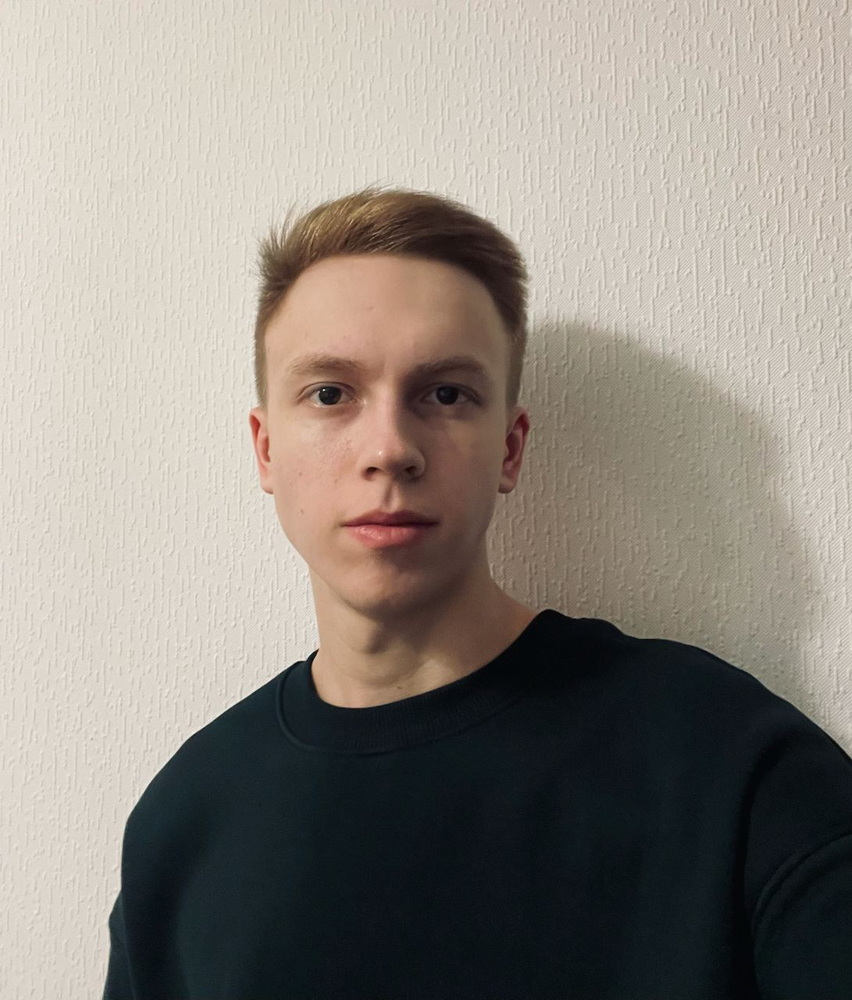

Skills
- Python 3
- Django
- Django REST Framework
- Flask
- FastAPI
- PostgreSQL
- Redis
- Celery
- Docker
- Git
- Nginx
- HTML5
- CSS3
- JavaScript
Опыт работы
| Обучение | Активно занимался разработкой небольших проектов для практики и закрепления навыков веб-разработки. Фокусировался на разработке бэкенда. Разработка структуры базы данных, оптимизация запросов к БД, настройка поиска, фильтров и пагинации. Разработка различных микросервисов. Настройка Nginx(ginicorn, supervisor), упаковка проектов в Docker контейнеры(docker, docker-compose). | 02.2022-09.2022 |
| Коммерческая разработка на фрилансе | Регулярно работаю на фрилансе, предоставляя свои услуги веб-разработчика. Занимаюсь разработкой и поддержкой веб-приложений для клиентов. Работаю с различными технологиями, включая бэкенд-разработку. Взаимодействую с клиентами, обсуждаю требования и детали проекта, предлагаю решения и воплощаю их в код. Стремлюсь к созданию качественного и эффективного кода, который удовлетворяет потребности клиентов. | 09.2022-now |
О себе
Всегда увлекался веб-разработкой. Есть желание профессионально расти и участвовать в сложных и ответственных проектах, чтобы получить новый опыт, столкнуться с интересными вызовами. В настоящее время я активно занимаюсь разработкой сложных пет-проектов. В дальнейшем планирую изучение front-end технологий для написания full-stack приложений самостоятельно.
Soft skills:
- Стрессоустойчивость: Привык решать сложные задачи и успешно справляться с высоким уровнем давления и стресса в рабочей среде. Умеет сохранять спокойствие и продуктивность, даже в сложных ситуациях.
- Многозадачность: Опыт работы на нескольких проектах одновременно, умение эффективно планировать и организовывать свою работу. Способность эффективно управлять временем и приоритетами, чтобы достичь результатов во всех проектах.
- Обучаемость: Способность быстро осваивать новые технологии, инструменты и методы разработки. Активное стремление к самообучению и развитию, готовность изучать новые концепции и применять их на практике.
- Ответственность: Надежный и ответственный подход к работе. Способность выполнять задачи в срок и достигать поставленных целей. Готовность взять на себя ответственность за свои действия и результаты.
Образование
РГПУ им А.И.Герцена'24
Информатика информационные технологии в образованни